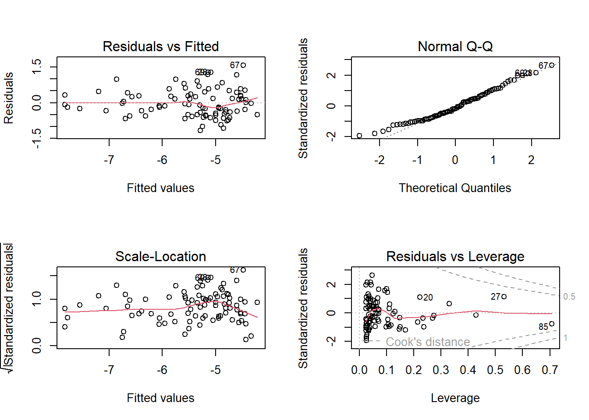
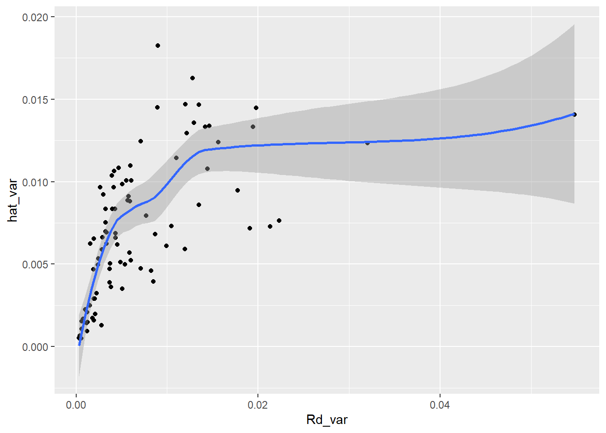
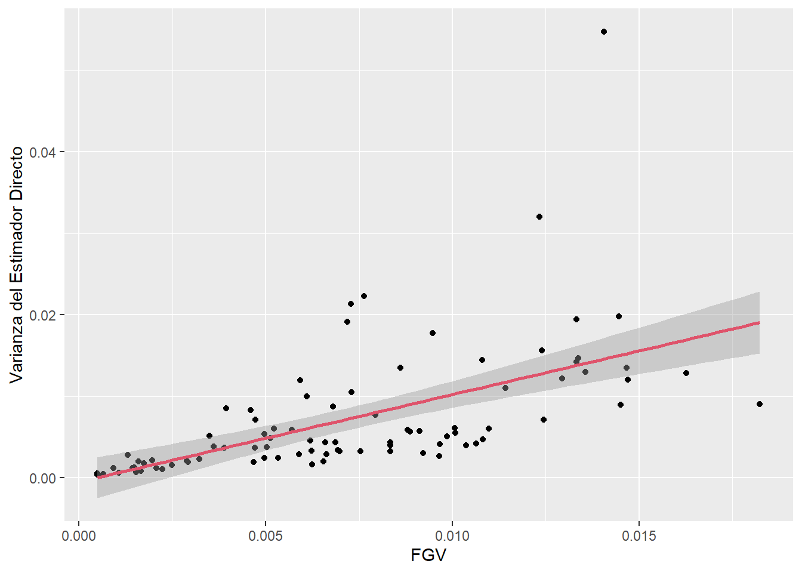
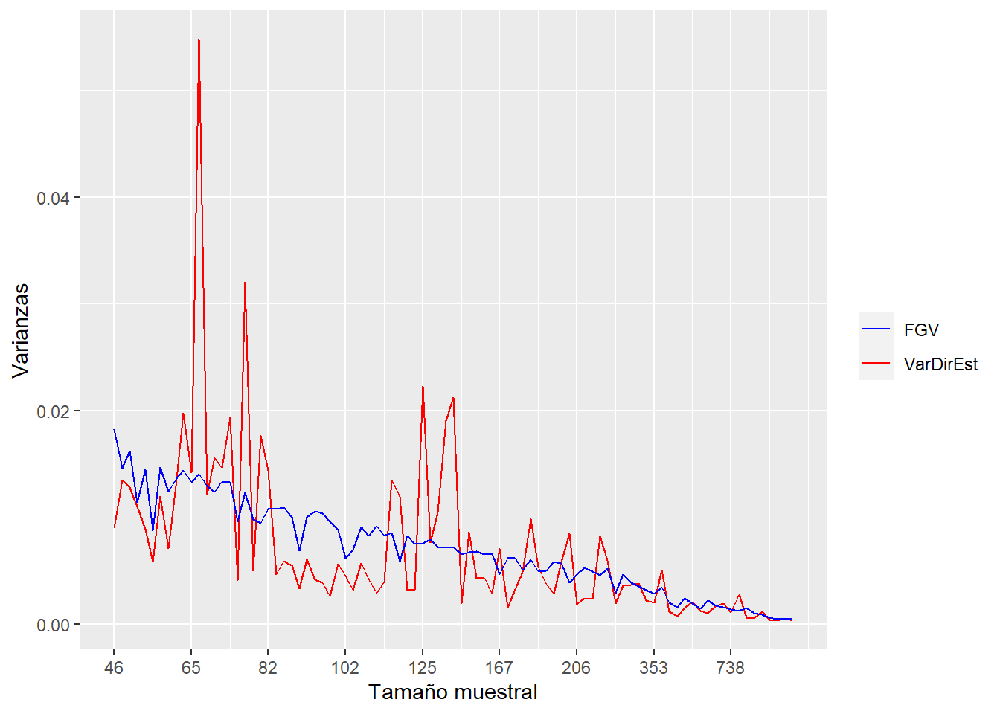
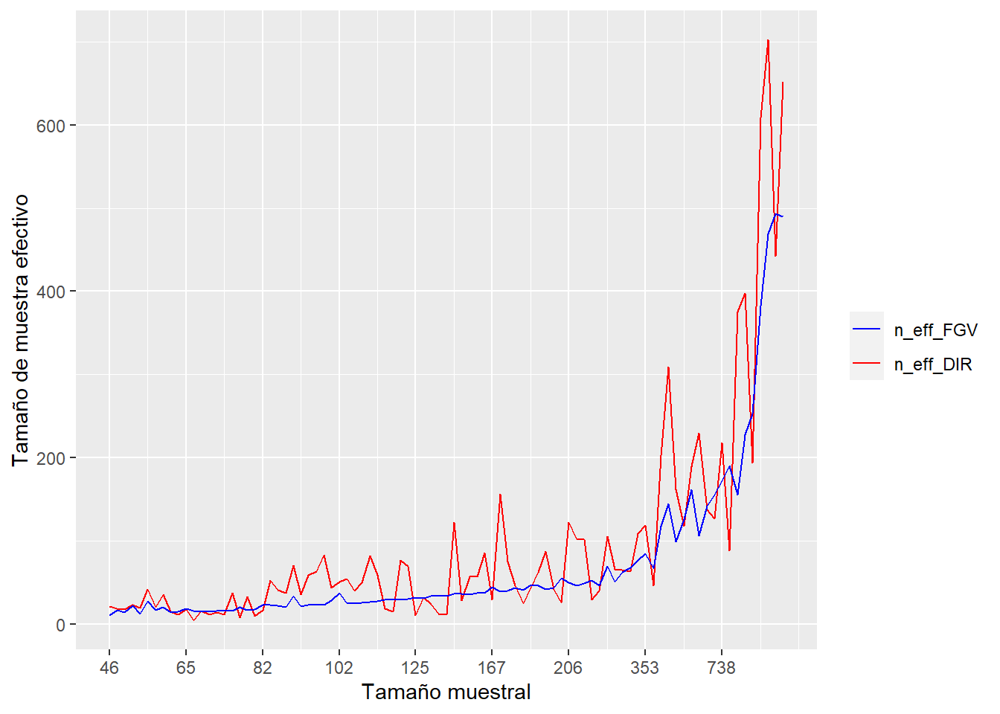

library(ggplot2)
library(dplyr)
library(patchwork)
select <- dplyr::select
id_dominio <- "id_dominio"Estimación de la tasa de informalidad en República Dominicana empleando modelos de área con transformación arcoseno
Función generalizada de varianza
Lectura de librerías
Lectura del la base de datos
Para realizar el conteo de UPMs por dominios, es necesario leer la base de datos.
encuestaDOM <- readRDS("../Data/encuestaDOM.Rds") %>%
mutate(
upm = str_pad(string = upm,width = 9,pad = "0"))Conteos de UPMs por id_dominio
n_upm <- encuestaDOM %>% distinct(id_dominio, upm) %>%
group_by(id_dominio) %>% tally(name = "n_upm",sort = TRUE)
tba(head(n_upm,10))| id_dominio | n_upm |
|---|---|
| 0101 | 127 |
| 3201 | 109 |
| 2501 | 87 |
| 3203 | 59 |
| 3202 | 42 |
| 1101 | 38 |
| 3206 | 32 |
| 0901 | 20 |
| 1301 | 20 |
| 2101 | 20 |
Lectura de las estimaciones directas del indicador
indicador_dom <- readRDS('../Data/indicador_dom.Rds')agregando conteos de las UPMs a las bases de datos.
indicador_dom <- full_join(indicador_dom, n_upm, by = id_dominio)Se filtran los dominios que tengan varianza 0, un deff mayor que 1 y 2 o más UPMs
indicador_dom1 <- indicador_dom %>%
filter(Rd_var>0 & Rd_deff>=1 & n_upm >= 2) para los dominios seleccionados se realiza la transformación \(\log(\sigma^2_d)\)
baseFGV <- indicador_dom1 %>%
dplyr::select(id_dominio , Rd, n, Rd_var) %>%
mutate(ln_sigma2 = log(Rd_var))Gráficas exploratorias
p1 <- ggplot(baseFGV, aes(x = Rd, y = ln_sigma2)) +
geom_point() +
geom_smooth(method = "loess") +
xlab("Formal")
p2 <- ggplot(baseFGV, aes(x = n, y = ln_sigma2)) +
geom_point() +
geom_smooth(method = "loess") +
xlab("Tamaño de muestra")
p3 <- ggplot(baseFGV,
aes(x = Rd * n, y = ln_sigma2)) +
geom_point() +
geom_smooth(method = "loess") +
xlab("Número de Formales")
p4 <- ggplot(baseFGV,
aes(x = sqrt(Rd), y = ln_sigma2)) +
geom_point() +
geom_smooth(method = "loess") +
xlab("Raiz cuadrada de tasa de formalidad")
(p1 | p2) / (p3 | p4)
rm('p1','p2','p3','p4')Ajustando el modelo log-lineal de la varianza
FGV1 <- lm(ln_sigma2 ~ 1 + Rd +
n + I(n ^ 2) + I(Rd * n) +
I(sqrt(Rd)) + I(sqrt(n)) +
I(sqrt(Rd * n)) ,
data = baseFGV)
a <- summary(FGV1)
a$coefficients %>% tba()| Estimate | Std. Error | t value | Pr(>|t|) | |
|---|---|---|---|---|
| (Intercept) | -24.1070 | 11.0744 | -2.1768 | 0.0324 |
| Rd | -22.2339 | 14.0709 | -1.5801 | 0.1180 |
| n | -0.0100 | 0.0101 | -0.9894 | 0.3254 |
| I(n^2) | 0.0000 | 0.0000 | 0.6784 | 0.4995 |
| I(Rd * n) | 0.0202 | 0.0164 | 1.2278 | 0.2231 |
| I(sqrt(Rd)) | 44.6820 | 24.8441 | 1.7985 | 0.0758 |
| I(sqrt(n)) | 0.8654 | 0.6751 | 1.2819 | 0.2035 |
| I(sqrt(Rd * n)) | -1.4024 | 0.8768 | -1.5994 | 0.1136 |
Determinar el valor de la constante delta.
delta.hat = sum(baseFGV$Rd_var) / sum(exp(fitted.values(FGV1)))
delta.hat[1] 1.236474Varianza suavizada
baseFGV <-
baseFGV %>% mutate(hat_var = delta.hat * exp(fitted.values(FGV1)))Validaciones sobre el modelo
par(mfrow = c(2, 2))
plot(FGV1)
varianza suavizada Vs varianza estimada
ggplot(baseFGV,
aes(x = Rd_var, y = hat_var)) +
geom_point() +
geom_smooth(method = "loess")
Consolidando la base de datos con los dominios observados y no observados
base_sae <- left_join(indicador_dom,
baseFGV %>% select(id_dominio, hat_var),
by = id_dominio) %>%
mutate(
Rd_var = ifelse(is.na(hat_var), NA_real_, Rd_var),
Rd_deff = ifelse(is.na(hat_var), NA_real_, Rd_deff)
)Estimando el deff_FGV y n_eff_FGV
base_FH <- base_sae %>%
mutate(
Rd_deff = ifelse(is.nan(Rd_deff), 1, Rd_deff),
deff_FGV = ifelse(Rd_var == 0 ,
1,
hat_var / (Rd_var / Rd_deff) #Fórmula del nuevo DEFF
),
# Criterio MDS para regularizar el DeffFGV
deff_FGV = ifelse(deff_FGV <= 1, NA_real_, deff_FGV), #Deff estimado
n_eff_FGV = n / deff_FGV, #Número efectivo de personas encuestadas
# Si no se estimó varianza para ese municipio, también excluir
# la estimación directa de este municipio, esto es relevante para el modelo FH
hat_var = ifelse(deff_FGV <= 1, NA_real_, hat_var),
Rd = ifelse(is.na(hat_var), NA_real_, Rd)
)
tba(head(base_FH, 10))| id_dominio | n | Rd | Rd_se | Rd_low | Rd_upp | Rd_var | Rd_cv | Rd_deff | des_municipio | n_upm | hat_var | deff_FGV | n_eff_FGV |
|---|---|---|---|---|---|---|---|---|---|---|---|---|---|
| 0101 | 2951 | 0.4147 | 0.0234 | 0.3688 | 0.4605 | 0.0005 | 0.0564 | 6.6758 | SANTO DOMINGO DE GUZMAN | 127 | 0.0005 | 5.9860 | 492.9810 |
| 0201 | 221 | 0.4526 | 0.0494 | 0.3557 | 0.5495 | 0.0024 | 0.1091 | 2.1769 | AZUA | 7 | 0.0053 | 4.7576 | 46.4517 |
| 0202 | 86 | NA | 0.0295 | 0.6784 | 0.7943 | NA | 0.0401 | NA | LAS CHARCAS | 2 | NA | NA | NA |
| 0203 | 86 | 0.7138 | 0.0742 | 0.5683 | 0.8594 | 0.0055 | 0.1039 | 2.3063 | LAS YAYAS DE VIAJAMA | 2 | 0.0101 | 4.2227 | 20.3661 |
| 0204 | 51 | NA | 0.0000 | 0.7263 | 0.7263 | NA | 0.0000 | NA | PADRE LAS CASAS | 1 | NA | NA | NA |
| 0205 | 34 | NA | 0.0000 | 0.7648 | 0.7648 | NA | 0.0000 | NA | PERALTA | 1 | NA | NA | NA |
| 0206 | 65 | 0.5527 | 0.1192 | 0.3188 | 0.7867 | 0.0142 | 0.2157 | 3.7006 | SABANA YEGUA | 2 | 0.0133 | 3.4692 | 18.7366 |
| 0208 | 74 | 0.8122 | 0.0642 | 0.6861 | 0.9382 | 0.0041 | 0.0791 | 1.9900 | TABARA ARRIBA | 2 | 0.0097 | 4.6595 | 15.8814 |
| 0210 | 16 | NA | 0.0000 | 0.1382 | 0.1382 | NA | 0.0000 | NA | ESTEBANIA | 1 | NA | NA | NA |
| 0301 | 264 | 0.5668 | 0.0607 | 0.4477 | 0.6860 | 0.0037 | 0.1071 | 4.0232 | NEIBA | 6 | 0.0039 | 4.2461 | 62.1742 |
Otras validaciones sobre el resultado del modelo.
nDom <- sum(!is.na(base_FH$hat_var))
temp_FH <- base_FH %>% filter(!is.na(hat_var))
ggplot(temp_FH %>% arrange(n), aes(x = hat_var, y = Rd_var)) +
geom_point() +
geom_smooth(method = "lm", col = 2) +
labs(x = "FGV", y = "VaRdirEst") +
ylab("Varianza del Estimador Directo")
Comparación de las varianzas con relación al tamaño de muestra efectivo
ggplot(temp_FH %>%
arrange(n), aes(x = 1:nDom)) +
geom_line(aes(y = Rd_var, color = "VarDirEst")) +
geom_line(aes(y = hat_var, color = "FGV")) +
labs(y = "Varianzas", x = "Tamaño muestral", color = " ") +
scale_x_continuous(breaks = seq(1, nDom, by = 10),
labels = temp_FH$n[order(temp_FH$n)][seq(1, nDom, by = 10)]) +
scale_color_manual(values = c("FGV" = "Blue", "VarDirEst" = "Red"))
Comparación del tamaño de muestra efectivo respecto al tamaño de muestra
ggplot(temp_FH %>%
arrange(n), aes(x = 1:nDom)) +
geom_line(aes(y = n / Rd_deff, color = "n_eff_DIR")) +
geom_line(aes(y = n_eff_FGV, color = "n_eff_FGV")) +
labs(y = "Tamaño de muestra efectivo",
x = "Tamaño muestral", color = " ") +
scale_x_continuous(breaks = seq(1, nDom, by = 10),
labels = temp_FH$n[order(temp_FH$n)][seq(1, nDom, by = 10)]) +
scale_color_manual(values = c("n_eff_FGV" = "Blue", "n_eff_DIR" = "red"))
Guardando el archivo
saveRDS(object = base_FH, "../Data/base_FH.Rds")